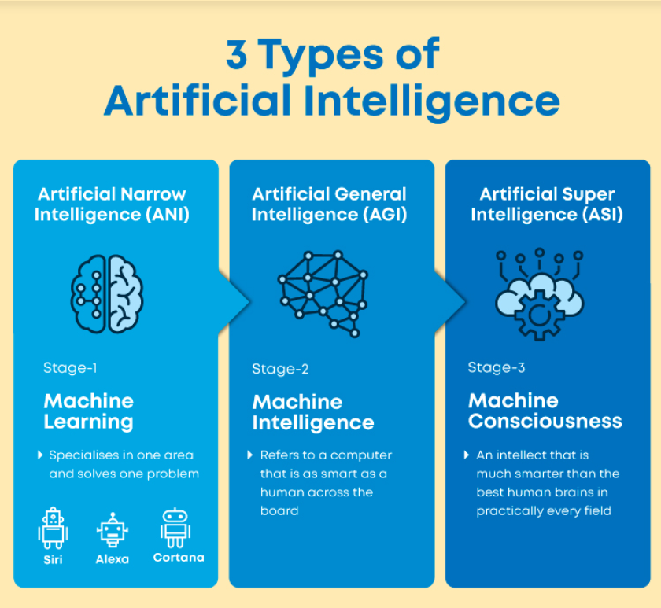

Categorization of Artificial Intelligence

What are the Types of Artificial Intelligence ?
Different Artificial Intelligence entities are built for different purposes, and that’s how they vary.
AI can be classified based on Type 1 and Type 2 (Based on functionalities). Here’s a brief introduction the first type.
3 Types of Artificial Intelligence :
- Artificial Narrow Intelligence (ANI)
- Artificial General Intelligence (AGI)
- Artificial Super Intelligence (ASI)